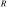
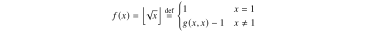
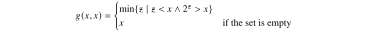

the term "recursive function" in computability seems to be used loosely and defined differently by different books, but the general consensus seems to be that mu-recursive functions (in reference to kleene's mu-operator), aliased partial recursive functions are defined as the complete class of recursive functions which is proved to represent the class of algorithmically computable functions (functions that can be computed by a machine) and the primitive recursive functions are a subset of that class restricted to total functions. the term recursive function usually seems to refer to the more general class of computable functions (the former).
suppose  is some fixed number and
is some fixed number and

where  is some given def-total-func of two variables. then
is some given def-total-func of two variables. then  is said to be obtained from by primitive recursion, or simply recursion.
is said to be obtained from by primitive recursion, or simply recursion.
godel defined a collection of number-theoretic functions  that, according to his intuition, represented all the computable functions. his definition was as follows:
that, according to his intuition, represented all the computable functions. his definition was as follows:
- successor. the function
 given by
given by  is computable.
is computable. - zero. the function
 given by
given by  is computable.
is computable. - projections. the functions
 given by
given by  ,
,  , are computable.
, are computable. - composition. if
 and
and  are computable, then so is the function
are computable, then so is the function  that on input
that on input  gives
gives
![\[ f(g_1(\overline{x}),\dots,g_k(\overline{x})). \]](ltx/f20a94dfd85.svg)
primitive recursion: if
 and
and  are computable,
are computable,  , then so are the functions
, then so are the functions  , defined by mutual induction as follows:
, defined by mutual induction as follows:

where
 .
.
- unbounded minimization. if
 is computable, then so is the function
is computable, then so is the function  that on input gives the least
that on input gives the least  such that
such that  is defined for all
is defined for all  and
and  if such a exists and is undefined otherwise. we denote this by
if such a exists and is undefined otherwise. we denote this by
![\[ f(\overline{x})=\mu y.(g(y,\overline{x})=0). \]](ltx/c6f98abaa31.svg)
the functions defined by 1 through 6 are called the  -recursive functions. the functions defined by 1 through 5 only are called the primitive recursive functions.
-recursive functions. the functions defined by 1 through 5 only are called the primitive recursive functions.
- the constant functions
 are primitive recursive:
are primitive recursive:
![\[ \operatorname{const}_n \defeq \underbrace{\brm{s} \circ \cdots \circ \brm{s}}_{n} \circ \brm{z}. \]](ltx/f9b8e5efc04.svg)
addition is primitive recursive, since we can define

this is a bona fide definition by primitive recursion: in rule blk-recursive-func-schema-5, take
 , and
, and  . then
. then

multiplication is primitive recursive, since

note how we used the function  defined previously. we are allowed to build up primitive recursive functions inductively in this way.
defined previously. we are allowed to build up primitive recursive functions inductively in this way.
exponentiation is primitive recursive, since

the predecessor function
![\[ x \dotminus 1 = \begin{cases} x-1 & \textif x > 0\\ 0 & \textif x=0 \end{cases} \]](ltx/46e61b47c0a.svg)
is primitive recursive

- proper subtraction:
![\[ x \dotminus y = \begin{cases} x-y & \textif x \geq y,\\ 0 & \textif x<y \end{cases} \]](ltx/65e17ab8603.svg)
is primitive recursive, and can be defined from predecessor in exactly the same way that addition is defined from successor. the sign function is primitive recursive:

the relations
 , and
, and  , considered as (0,1)-valued functions, are all primitive recursive; for example,
, considered as (0,1)-valued functions, are all primitive recursive; for example,

- functions can be defined by cases. for example,
![\[ g(x,y) = \begin{cases} x+1 & \textif 2^x < y,\\ x & \textif 2^x \geq y \end{cases} \]](ltx/f5c6952a578.svg)
is primitive recursive:
![\[ g(x,y) \defeq \operatorname{compare}_<(2^x,y) \cdot (x+1) + \operatorname{compare}_\geq(2^x,y) \cdot x. \]](ltx/0ced153db9b.svg)
inverses of certain functions can be defined. for example,
 is primitive recursive:
is primitive recursive:  , where
, where

and
is from the previous example. the function  just continues to add 1 to its first argument
just continues to add 1 to its first argument  until the condition
until the condition  is satisfied. this must happen for some . inverses of other common functions, such as square root, can be defined similarly.
is satisfied. this must happen for some . inverses of other common functions, such as square root, can be defined similarly.
observe that all primitive recursive functions are total, whereas a -recursive function may not be. there exist total computable functions that are not primitive recursive; one example is Ackermann's function:

more primitive recursive functions include:


the term recursion refers to a function defined by induction. we first define  and hen define
and hen define  in terms of previously defined functions using as inputs and
in terms of previously defined functions using as inputs and  . for example, the factorial function
. for example, the factorial function  is defined by the recursion schemes
is defined by the recursion schemes
![\[ f(0)=1 \quad \textand \quad f(x+1) = (x+1) \cdot f(x) \]](ltx/36eaa933e01.svg)
where we assume that multiplication has been previously defined.
up until the early 1930s, the term "recursive function" meant what we now call a primitive recursive function to distinguish it from the Herbrand-Gödel general recursive function. in 1931 Gödel used primitive recursive functions in the proof of his famous incompleteness theorem and called them simply by the German term "rekursiv." the main property of recursion is the primitive recursion scheme (def-primitive-recursive-schema-5) below, which yields an inductive definition of  using the preceding value
using the preceding value  and previously defined functions and . [Kleene 1952] put the primitive recursive functions in the following succinct form which has become standard.
and previously defined functions and . [Kleene 1952] put the primitive recursive functions in the following succinct form which has become standard.
the class of primitive recursive functions is he least class  of functions closed under the following schemes (1)-(5).
of functions closed under the following schemes (1)-(5).
- the successor function
 is in .
is in . - the constant functions
 are in ,
are in ,  .
. - the identity functions
 ,
,  , are in .
, are in . - (composition) if
 , then
, then
![\[ f(\overline{x})=h(g_1(\overline{x}),\dots,g_m(\overline{x})) \]](ltx/40b17ff6cf5.svg)
is in, where  are functions of
are functions of  variables,
variables,  , and is a function of
, and is a function of  variables.
variables. def-primitive-recursive-schema-5(primitive recursion) if
 and
and  , then
, then  where
where

where
 , the
, the  variables treated as parameters, assuming and are functions of and
variables treated as parameters, assuming and are functions of and  variables, respectively. and is a function of variables. (in case
variables, respectively. and is a function of variables. (in case  , a 0-ary function is a constant function which is in by scheme 2).
, a 0-ary function is a constant function which is in by scheme 2).
[kleene 1952] showed that all the usual functions on  are primitive recursive, including
are primitive recursive, including  and limited subtraction
and limited subtraction  ,
,
![\[ x \dotminus y \defeq \begin{cases} x-y & \textif x \geq y\\ 0 & \textif x<y. \end{cases} \]](ltx/a2589596854.svg)
the class of  -recursive (partial) functions is the least class obtained by closing under schemes (1)-(5) for the primitive recursive functions and the following scheme (6).
-recursive (partial) functions is the least class obtained by closing under schemes (1)-(5) for the primitive recursive functions and the following scheme (6).
- (unbounded search) if
 is a partial function, and
is a partial function, and
![\[ \psi(\overline{x})=(\mu y)[\theta(\overline{x},y)\downarrow=1 \smallspace\&\smallspace (\forall z<y)[\theta(\overline{x},z)\downarrow \neq 1]], \]](ltx/ef67ab77025.svg)
then is in . (here
is in . (here  diverges if there is no such . hence, may be nontotal.)
diverges if there is no such . hence, may be nontotal.)
(taken from robert i. soare, 2016 chapter 17 history of computability)
the constant function  for all
for all  is primitive recursive.
is primitive recursive.
this may be true by definition when considering def-primitive-recursive, but not when considering the axioms of def-mu-recursive-functions.

we can gain intuition by looking at it in the form of a matrix of functions, in which all items in the same column are equal and each column corresponds to the successor of the value corresponding to the column on its left:
![\begin{tikzpicture}
\matrix(A) [matrix of math nodes] {
C_0^0 & C_1^0 & \cdots & C^0_i\\
C_1^0 & C_1^1 & \ddots\\
\vdots & \ddots & \ddots\\
C_n^0 & & & C_i^n\\
\verteq & \verteq & \cdots & \verteq\\
0 & 1 & \cdots & i\\
};
\draw[decorate, decoration={calligraphic brace, amplitude=7pt}, thick] (A-1-4.north east) -- (A-4-4.south east) node[right, midway, xshift=10pt]{functions};
\draw[decorate, decoration={calligraphic brace, amplitude=3pt}, thick] (A-6-4.north east) -- (A-6-4.south east) node[right, midway, xshift=10pt]{constants};
\end{tikzpicture}](ltx/08b364c618f.svg)
if we write  , we have the recursion equations
, we have the recursion equations

we can rewrite these equations as

where  the functions
the functions  , and
, and  are primitive recursive functions; in fact they are initial functions. also,
are primitive recursive functions; in fact they are initial functions. also,  is a primitive recursive function, since it is obtained by composition of primitive recursive functions. thus, the preceding is a valid application of the operation of recursion to primitive recursive functions. hence is primitive recursive.
is a primitive recursive function, since it is obtained by composition of primitive recursive functions. thus, the preceding is a valid application of the operation of recursion to primitive recursive functions. hence is primitive recursive.
the recursion equations for  are
are

this can be rewritten

here,  is the zero function.
is the zero function.
![\[ g(x_1,x_2,x_3)=f(\pi_2^3(x_1,x_2,x_3),\pi_3^3(x_1,x_2,x_3)), \]](ltx/502835f85b4.svg)
 is
is  , and
, and  are projection functions. notice that the functions
are projection functions. notice that the functions  , and
, and  are all primitive recursive functions, since they are all initial functions.
are all primitive recursive functions, since they are all initial functions.  is also primitive recursive, so is a primitive recursive function since it is obtained from primitive recursive functions by composition. finally, we conclude that
is also primitive recursive, so is a primitive recursive function since it is obtained from primitive recursive functions by composition. finally, we conclude that
![\[ h(x,y)=x \cdot y \]](ltx/e24763529d8.svg)
is primitive recursive.
for  , the recursion operations are
, the recursion operations are

more precisely,  , where
, where

and
![\[ g(x_1,x_2)=s(x_1) \cdot x_2. \]](ltx/cdd772b9467.svg)
finally, is primitive recursive because
![\[ g(x_1,x_2)=s(\pi_1^2(x_1,x_2)) \cdot \pi_2^2(x_1,x_2) \]](ltx/437903f745d.svg)
and multiplication is already known to be primitive recursive.
for  , the recursion equations are
, the recursion equations are

note that these equations assign the value 1 to the "indeterminate"  .
.
the predecessor function  is defined as follows:
is defined as follows:
![\[ p(x)=\begin{cases} x-1 & \textif x \neq 0\\ 0 & \textif x = 0 \end{cases} \]](ltx/f89958c8342.svg) .
.
the recursion equations for are simply

hence, is primitive recursive.
the function  is defined as follows:
is defined as follows:
![\[ x \dotminus y = \begin{cases} x-y & \textif x \geq y\\ 0 & \textif x<y. \end{cases} \]](ltx/27f31490146.svg)
this function should not be confused with the function  , which is undefined if
, which is undefined if  . in particular, is total, while is not.
. in particular, is total, while is not.
we show that is primitive recursive by displaying the recursion equations:

the function  is defined as the absolute value of the difference between and . it can be expressed simply as
is defined as the absolute value of the difference between and . it can be expressed simply as
![\[ \abs{x-y}=(x\dotminus y)+(y \dotminus x) \]](ltx/90d045c50e3.svg)
and thus is primitive recursive.
 is the "integer part" of the quotient
is the "integer part" of the quotient  . for example,
. for example,  and
and  . the equation
. the equation
![\[ \floor*{x/y}=\min_{t \le x}[(t+1) \cdot y > x] \]](ltx/3093fde0e13.svg)
shows that is primitive recursive. note that according to this equation, we are taking  .
.
if  is a primitive recursive relation then , designed as
is a primitive recursive function.
the function  is primitive recursive
is primitive recursive
consider the function
 is primitive recursive by the-bounded-min and so
is primitive recursive by the-bounded-min and so  is primitive recursive aswell. and by def-prim-recurs-def-by-cases the function desired can be defined as:
is primitive recursive aswell. and by def-prim-recurs-def-by-cases the function desired can be defined as:

is primitive recursive too.
the function
![\[ f(x)=\begin{cases} \floor*{\log_2(x)} & x>0\\ 0 & x=0 \end{cases} \]](ltx/0d29f2fd535.svg)
is primitive recursive.
consider the function

is primitive recursive because the relation  is.
is.
the function ![\(f(x,y)=[x \circ y]\)](ltx/f8527c20555.svg) that generalizes the example
that generalizes the example  because 3 is 11 in binary form, and 100 is 4 in binary, which gives 11100 in binary which is the binary representation of the decimal 28.
because 3 is 11 in binary form, and 100 is 4 in binary, which gives 11100 in binary which is the binary representation of the decimal 28.
let  denote the length of digits in the binary representation of . we have
denote the length of digits in the binary representation of . we have
![\[ f(x,y)=[x \circ y]=x \cdot 2^{|y|}+y. \]](ltx/407f3896d4a.svg)
we have  is primitive recursive, and exponentiality is primitive recursive as well as addition and multiplication and so is primitive recursive by composition.
is primitive recursive, and exponentiality is primitive recursive as well as addition and multiplication and so is primitive recursive by composition.
the function giving the fibonacci sequence, i.e.  , is primitive recursive.
, is primitive recursive.
let  , if we show that is primitive recursive then we can simply define
, if we show that is primitive recursive then we can simply define  .
.
![\[ g(n+1)=\godelnum{f(n+1),f(n+2)}=\godelnum{f(n+1),f(n+1)+f(n)}=\godelnum{r(g(n)),r(g(n)+l(g(n)))} \]](ltx/ed19a4d3351.svg)
because we were able to define  in terms of
in terms of  and other p.r. functions we know is p.r.
and other p.r. functions we know is p.r.